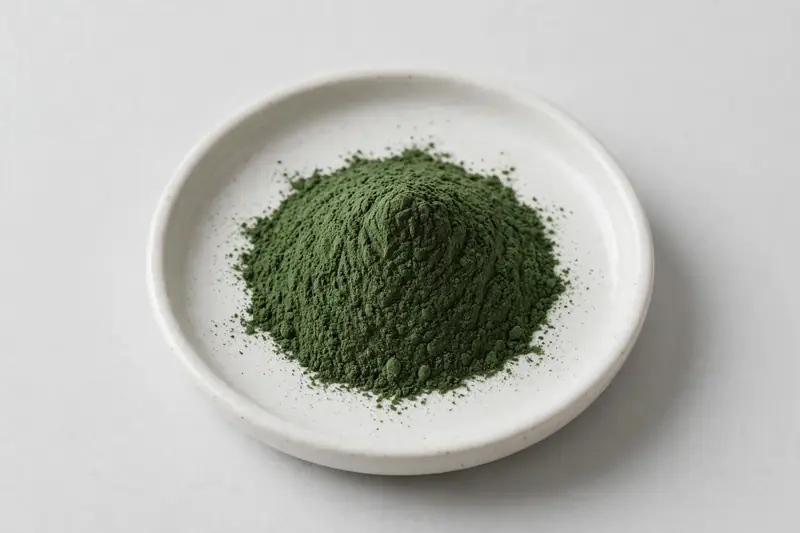

Peppermint — leaf extract positioned around menthol grades for tea, beverage and digestive wellness formulations.

Overview
Peppermint extract is derived from Mentha piperita leaf and is one of the most consistently traded aromatic botanicals. Buyers typically request grades defined by menthol content, with menthone and total essential-oil figures sometimes referenced alongside. Demand spans tea, beverages and digestive wellness categories. As a Xi'an-based trading company sourcing through vetted partner producers, we ask buyers for their target specification and confirm feasibility honestly before any commitment.
Specifications below reflect commonly requested options in the market — not a stock list. Share your target spec and we'll confirm exactly what we can supply, honestly.
| Specification | Details |
|---|---|
| Botanical identity | Peppermint extract powder (Mentha piperita leaf) |
| Marker compound | Commonly requested spec grades: menthol-defined grades and ratio-type extracts; assay scope agreed per buyer specification |
| Appearance | Fine powder, color typical of the extract |
| Mesh size | Typically 80–100 mesh (confirm per inquiry) |
| Testing | COA/TDS arranged on request; scope agreed per your spec |
Applications
Documentation
We don't claim in-house labs or certifications we don't hold. COA and TDS documents can be arranged on request, and testing scope is agreed against your specification before supply.
FAQ
Related products
Nattokinase (fermented soybean enzyme)
Key marker: 20,000-40,000 FU/g
View specs →Spermidine (wheat germ-derived polyamine)
Key marker: 0.5-1% Spermidine
View specs →Phosphatidylserine
Key marker: 20-50% PS
View specs →Brassica oleracea
Key marker: Glucosinolate & Chlorophyll
View specs →Salvia hispanica
Key marker: Omega-3 ALA & Fiber
View specs →Send your target spec and volumes — we'll respond with a tailored quotation.
Request a Quote